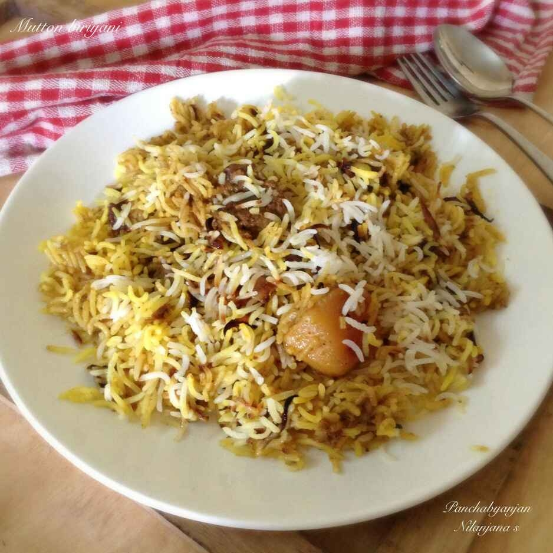

Home
Chicken Biriyani

Ingradients
- Chicken - 1 kg
- Basmati Rice - 500 gm
- Yogurt - 200 gm
- Onions - 2 large, thinly sliced
- Tomatoes - 2 medium, chopped
- Garlic Paste - 2 tbsp
- Ginger Paste - 2 tbsp
- Biriyani Masala - 3 tbsp
- Saffron - a few strands soaked in warm milk
- Fresh Coriander and Mint Leaves - a handful each, chopped
- Ghee or Oil - 4 tbsp
- Salt - to taste
- Water - as needed
Instructions
- Marinate the chicken with yogurt,ginger and garlic paste, biriyani masala, and salt. Let it sit for at least 1 hour.
- Rinse the basmati rice under cold water until the water runs clear. Soak the rice for 30 minutes, then drain.
- In a large pot, bring water to a boil. Add salt and the soaked rice. Cook until the rice is 70% cooked. Drain and set aside.
- In a heavy-bottomed pan, heat ghee or oil. Fry the sliced onions until golden brown. Remove half for garnishing.
Add the chopped tomatoes to the pan and cook until they soften.
- Add the marinated chicken to the pan. Cook until the chicken is fully cooked and the oil starts to separate from the masala.
- Layer the partially cooked rice over the chicken in the pan. Sprinkle the saffron milk, chopped coriander, and mint leaves on top
over the pan with a tight-fitting lid. Cook on low heat for 25-30 minutes to allow the flavors to blend and the rice to cook.
Serving
Gently fluff the biriyani before serving. Serve hot with raita or a side salad.